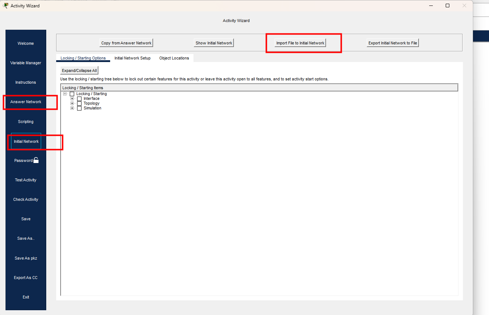

- masukin soal di initial network

- masukin jawban di answer network
cara menyelesaikan soal ini adalah dengan melakukan default route ke gateway yang ada di isp
enable
configure terminal
ip route 0.0.0.0 0.0.0.0 10.10.10.2setelah berhasil Compleated Feedback, dan nanti akan muncul flag dari soal ini.